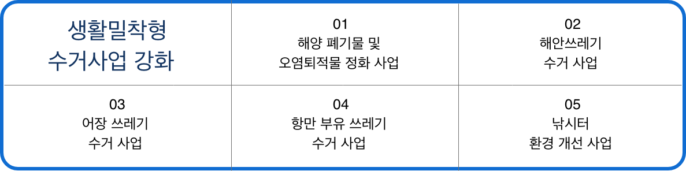

해양 보전
바다를 보호하자!
해양 폐기물 정책
해양폐기물 발생원 집중 관리를 통한 예방
해양폐기물 관리기반 고도화
생활 밀착형 수거 사업 강화
대상자 맞춤형 교육, 홍보
해양 보호 구역 이란?
해양생태계 및 해양경관 등을 특별히 보전할 가치가 있어
국가 또는 지자체가 특정 공유수면에 대해 지정, 관리하는 구역
해양 보호 구역 지정 근거
해양 보호 구역 지역 시 혜택은?
해양 보호 구역 지정 현황
연안습지보호지역 지정요건 (습지보전법 제8조)
- 자연상태가 원시성을 유지하고 있거나 생물다양성이 풍부한 지역
- 희귀하거나 멸종위기에 처한 야생 동·식물이 서식·도래하는 지역
- 특이한 경관적·지형적 또는 지질학적 가치를 지닌 지역
해양생태계보호구역 지정요건
(해양생태계 보전 및 관리에 관한 법률 제25조 1항)
- 해양의 자연생태가 원시성을 유지하고 있거나 해양생물 다양성이 풍부하여
보전 및 학술적 연구가치가 있는 해역
- 해양의 지형지질생태가 특이하여 학술적 연구 또는 보전이 필요한 지역
- 해양의 기초생산력이 높거나 보호대상해양생물의 서식지·산란지 등으로서
보전가치가 있다고 인정되는 해역
- 다양한 해양생태계를 대표할 수 있거나 표본에 해당하는 지역
- 산호초·해초 등의 해저경관 및 해양경관이 수려하여 특별히 보전할
필요가 있는 해역
- 그 밖에 해양생태계의 효과적인 보전 및 관리를 위하여 특별히 필요한
해역으로서 대통령령이 정하는 해역
출처 : https://www.meis.go.kr/mes/marineSanctuary/view1.do
개인 해양 이용 방법
올바른 바다 이용
- 1.
- 2.
- 3.
플라스틱 사용 줄이기
해산물 구매하기
활동하는 단체들 지원하기
리사이클 디자인 상품 소개
해양 쓰레기가 '도어스토퍼'로 변신…
재활용 기념품 아이디어 공모 대상
해양 쓰레기를 재활용해 만드는 아이디어 공모전에
‘고래 도어스토퍼’가 대상작으로 선정됐다.
도어스토퍼는 문이 쉽게 움직이지 않도록 문 아래에 끼워 넣는 고정장치다.
해양수산부는 '해양 쓰레기 업사이클링 아이디어 공모전'에서
고래 도어스토퍼(이충연)가 대상으로 선정됐다고 23일 밝혔다.
올해 공모전은 해양 쓰레기 재활용에 대한 국민의 인식을 높이기 위해
지난해에 이어 두 번째로 개최됐으며 11월 13일부터 이달 11일까지
총 145건의 응모작이 접수됐다.
해수부는 관련 전문가의 심사를 거쳐
대상 1점, 최우수상 2점, 우수상 5점을 선정했다.
특히 올해는 업사이클링 기념품에 대한 아이디어를 공모해
활용도가 더욱 높을 것으로 기대된다.
출처 : https://www.etoday.co.kr/news/view/1837265
SS 캠페인
3개 중 1개 실천 하기
수칙 사진 찍기

밑에와 같이 태그 달기
(# S S 챌린지 #올바른 바다 이용 )